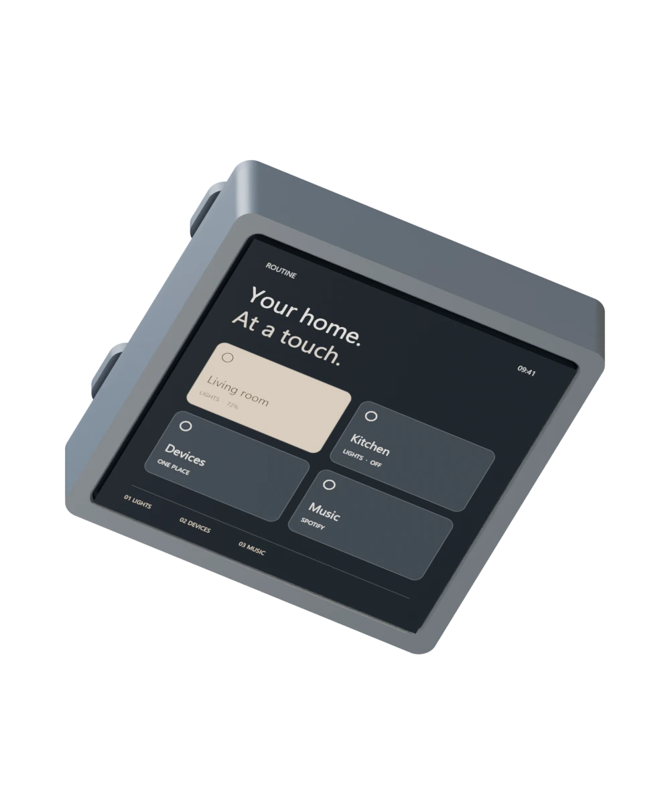
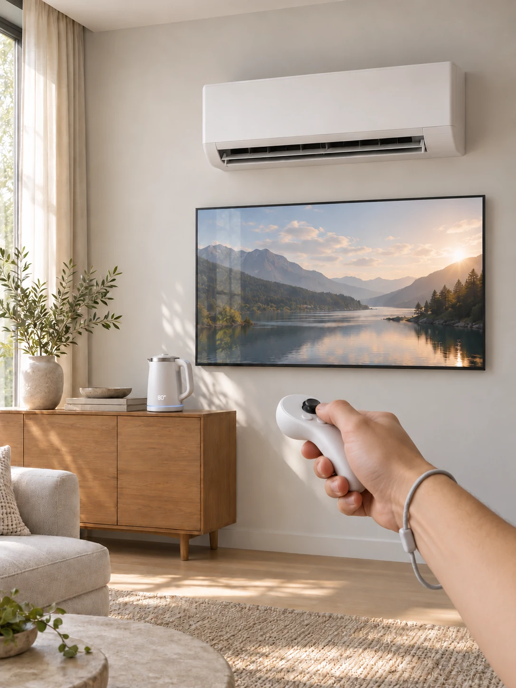
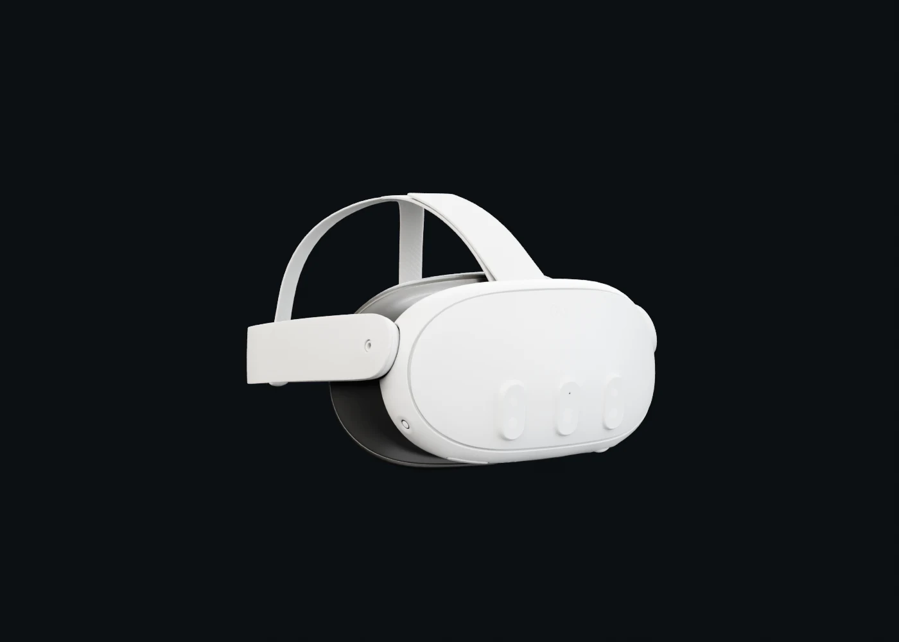
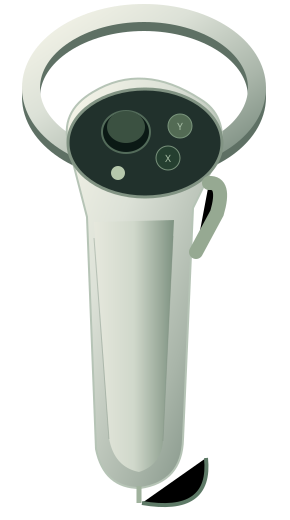

A battery case
that hangs on the wall.
Parametric enclosure for the Guition ESP32-S3-4848S040 4-inch display, with a built-in LiPo and a magnetic wall dock.
I’m Artur. I connect software, AI and the physical world to make everyday things work a little better.
Storefronts, small brands and player tools.
Pick a door. Take a look around.
One store. Four marketplaces.
Rozetka, Prom, Epicentr and Allo, connected through one storefront hub.
For dogs. And their humans.
A Shopify store with dog accessories for walks, play and everyday care.
Plan the raid. Skip the guesswork.
Raid-cost calculator and vending tools for players of Rust.
Six pinned projects. One idea:
software you can feel in the room.
Parametric enclosure for the Guition ESP32-S3-4848S040 4-inch display, with a built-in LiPo and a magnetic wall dock.
Search Spotify, browse the library and control playback and Connect devices from ESPHome displays.
Routine Controller UI for the Guition ESP32-S3-4848S040: lights, devices and music pages configured from one YAML file.
Keeps Govee H6076 lamps in beat-reactive music mode with a fixed colour, through Music DreamView and Bluetooth LE.
A local Node.js bridge for bulb control, persistent devices and automatic reconnection. Built to keep the light flowing.
Yeelight Bridge brings PC lighting into the room. Add your bulbs, connect them to SignalRGB, and let the colors follow.
One integrated display. A battery. A printed enclosure.
Scroll to see the actual build come apart.
The 4-inch Guition unit combines the touchscreen, display and ESP32-S3. They stay together in the build, running the ESPHome interface for lights, devices and music.

A headset. A controller.
A room you can reach into.
Smart-home apps hide every device behind a list of tiles. The idea is to skip the list: look at the real device and control it where it stands.



Interactive concept · no device connected
Every point is a year of showing up.
Scrub through the journey.